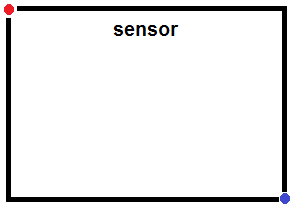
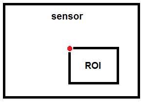

Connection to Camera Board
This object represents a connection from the MATLAB®
software to a Camera Board attached to the Raspberry
Pi™ hardware.
To create this object, use the cameraboard function.
To configure the Camera Board settings, use the object properties
listed in Properties. To interact
with the Camera Board, use this object with the functions listed in Object Functions.
Resolution — Image dimensions'640x480' (default) | '160x120' | '320x240' | '800x600' | '1024x768' | '1280x720' | '1920x1080'This property is read-only.
Image dimensions, specified as a string.
When you create the cameraboard object, you
can specify this value.
Example: '1024x768'
Data Types: char
Quality — JPEG image quality10 (default) | integer from 0 to 100This property is read-only.
JPEG image quality, returned as a scalar from 1 to 100 (low to high).
The value of this parameter is inversely related to the amount
of compression the camera performs upon the JPEG images. A value of 1 applies
maximum compression. Avalue of 100 applies minimal compression.
When you create the cameraboard object, you
can specify this value.
Example: 10
Data Types: double
Rotation — Degrees of clockwise rotation0 (default) | 90 | 180 | 270Degrees of clockwise rotation, returned as 0, 90, 180,
or 270.
Use this value to alter the orientation of the images that the Camera Board captures.
You can specify this value when you create the cameraboard object,
and later by writing a new value to the property that has the same
name.
Example: 180
Data Types: double
HorizontalFlip — Enable horizontal flip0 (default) | 1Enable horizontal flip, returned as a logical value.
Use this value to reverse the left and right orientation of the images captured that the Camera Board captures.
You can specify this value when you create the cameraboard object,
and later by writing a new value to the property that has the same
name.
Example: 1
Data Types: logical
VerticalFlip — Flip image vertically0 (default) | 1Flip image vertically, returned as a logical value.
Use this value to reverse the top and bottom orientation of the images captured that the Camera Board captures.
You can specify this value when you create the cameraboard object,
and later by writing a new value to the property that has the same
name.
Example: 1
Data Types: logical
FrameRate — Video frame rate30 (default) | integer from 2 to 30This property is read-only.
Video frame rate, returned as a scalar from 2 to 30 frames per second (fps).
When you create the cameraboard object, you
can specify this value.
Example:
Data Types: double
Brightness — Image brightness50 (default) | integer from 0 to 100Image brightness, returned as a scalar from 0 to 100 (low to high).
You can specify this value when you create the cameraboard object,
and later by writing a new value to the property that has the same
name.
Example: 60
Data Types: double
Contrast — Image contrast0 (default) | integer from -100 to 100Image contrast, returned as a scalar from -100 to 100 (low to high).
You can specify this value when you create the cameraboard object,
and later by writing a new value to the property that has the same
name.
Example: 60
Data Types: double
Saturation — Image color saturation0 (default) | integer from -100 to 100Image color saturation, returned as a scalar from -100 to 100 (low to high).
You can specify this value when you create the cameraboard object,
and later by writing a new value to the property that has the same
name.
Example: 60
Data Types: double
Sharpness — Image sharpness0 (default) | integer from -100 to 100Image sharpness, returned as a scalar from -100 to 100 (low to high).
You can specify this value when you create the cameraboard object,
and later by writing a new value to the property that has the same
name.
Example: 60
Data Types: double
ExposureMode — Exposure mode'auto' (default) | 'night' | 'nightpreview' | 'backlight' | 'spotlight' | 'sports' | 'snow' | 'beach' | 'verylong' | 'fixedfps' | 'antishake' | 'fireworks'Exposure mode, returned as a string.
Select the exposure mode for various conditions, or use auto to
have the camera select the best mode.
You can specify this value when you create the cameraboard object,
and later by writing a new value to the property that has the same
name.
Example: 'backlight'
Data Types: char
ExposureCompensation — Exposure compensation0 (default) | integer from -10 to 10Exposure compensation, returned as a scalar from -10 to 10 (low to high).
Fine-tune the automatic exposure. For example, if a backlit
subject is too dark when ExposureMode is 'backlight',
increase the value of ExposureCompensation.
You can specify this value when you create the cameraboard object,
and later by writing a new value to the property that has the same
name.
Example: -1
Data Types: double
AWBMode — Automatic white balance mode'auto (default) | 'off' | 'sun' | 'cloud' | 'shade' | 'tungsten' | 'fluorescent' | 'incandescent' | 'flash' | 'horizon'Automatic white balance mode, returned as a string.
Select the white balance mode for various conditions, or use auto to
have the camera select the best mode.
You can specify this value when you create the cameraboard object,
and later by writing a new value to the property that has the same
name.
This mode adjusts the hue of the image to match the color temperature of various light sources.
For example, tungsten light bulbs tend to produce images that
have an orange hue. To reduce this effect, set AWBMode to auto or tungsten.
To keep this effect, set AWBMode to off.
To heighten this effect, set AWBMode to auto or shade.
Example: 'backlight'
Data Types: char
MeteringMode — Metering mode'average' (default) | 'spot' | 'backlit' | 'matrix'Metering mode, returned as a string.
You can specify this value when you create the cameraboard object,
and later by writing a new value to the property that has the same
name.
This mode selects which portion of the image determines exposure.
average — Uses values from
across the scene, with a moderate bias toward values near the center.
spot — Uses values from
a narrow area in the center of the image.
backlit — Uses a cluster
of lower values near the center of the image.
matrix — Uses values from
a grid of specific points in the image.
Example: 'backlight'
Data Types: char
ImageEffect — Special effect'none (default) | 'negative' | 'solarise' | 'sketch' | 'denoise' | 'emboss' | 'oilpaint' | 'hatch' | 'gpen' | 'pastel' | 'watercolour' | 'film' | 'blur' | 'saturation' | 'colourswap' | 'washedout' | 'posterise' | 'colourpoint' | 'colourbalance' | 'cartoon'Special effect, returned as a string.
Select a special effect, or use none to disable
special effects.
You can specify this value when you create the cameraboard object,
and later by writing a new value to the property that has the same
name.
Example: 'cartoon'
Data Types: char
VideoStabilization — Video stabilization'off' (default) | 'on'Video stabilization, returned as a string.
You can specify this value when you create the cameraboard object,
and later by writing a new value to the property that has the same
name.
Activate built-in video stabilization to reduce effects of vibration.
Example: 'on'
Data Types: char
ROI — Region of interest[0.00 0.00 1.00 1.00] (default)Region of interest (ROI), returned as a vector of four values: x, y, width, height.
You can specify this value when you create the cameraboard object,
and later by writing a new value to the property that has the same
name.
ROI defines which portion of the camera sensor to use. You can use this definition to perform digital panning and zooming while you record video.
For still images (snapshot) and video (record),
the camera “smooths” ROI changes by applying them gradually
over a sequence of image frames.
The following values define the starting point and size of the ROI:
X, the vertical starting point, from 0.0000 to 1.0000 (top to bottom)
Y, the horizontal starting point, from 0.0000 to 1.0000 (left to right)
Height, from 0.0000 to 1.0000 (small to large)
Width, from 0.0000 to 1.0000 (small to large)
The following illustration shows how X and Y position the ROI relative to the Camera Board sensor:
The red dot is at X = 0.00 and Y = 0.00.
The blue dot is at X = 1.00, Y = 1.00.

For example, entering:
mycam.ROI = [0.50 0.50 0.33 0.33]

The 0.50 0.50 values place the upper left
corner of the ROI in the center of the sensor. The 0.33 0.33 values
resize the ROI to 1/3 of the sensor. If ROI exceeds the dimensions
of the sensor, the method that you are using produces the following
error:
Index exceeds matrix dimensions.
Example: [0.50 0.50 0.33 0.33]
Data Types: double
You can connect from the MATLAB software to the Camera Board, take a photograph, and record video.
Create a connection from the MATLAB software to the Raspberry Pi board.
mypi = raspi
Create a connection, mycam,
from the MATLAB software to the Camera Board, and set the image
resolution. The connection displays the Camera Board properties.
mycam = cameraboard(mypi,'Resolution','1280x720')
mycam =
Cameraboard with Properties:
Name: Camera Board
Resolution: '1280x720' (View available resolutions)
Quality: 10 (1 to 100)
Rotation: 0 (0, 90, 180 or 270)
HorizontalFlip: 0
VerticalFlip: 0
FrameRate: 30 (2 to 30)
Recording: 0
Picture Settings
Brightness: 50 (0 to 100)
Contrast: 0 (-100 to 100)
Saturation: 0 (-100 to 100)
Sharpness: 0 (-100 to 100)
Exposure and AWB
ExposureMode: 'auto' (View available exposure modes)
ExposureCompensation: 0 (-10 to 10)
AWBMode: 'auto' (View available AWB modes)
MeteringMode: 'average' (View available metering modes)
Effects
ImageEffect: 'none' (View available image effects)
VideoStabilization: 'off'
ROI: [0.00 0.00 1.00 1.00] (0.0 to 1.0 [top, left, width, height])Import and display a sequence of 10 snapshots on your host computer.
for ii = 1:10 img = snapshot(mycam) imagesc(img) drawnow end
If the image is upside down, change its orientation.
mycam.Rotation = 180
You can use the same approach to change the values of many cameraboard properties.
Record a 60 second video.
record(mycam,'myvideo.h264',60)Stop the recording immediately.
stop(mycam)
Copy the video from the board to your host computer.
getFile(mypi,'myvideo.h264','C:\MATLAB ')
Delete the video file from the board to free up space.
deleteFile(mypi,'myvideo.h264')cameraboard | deleteFile | getFile | raspi | raspi_examples | record | snapshot | stop